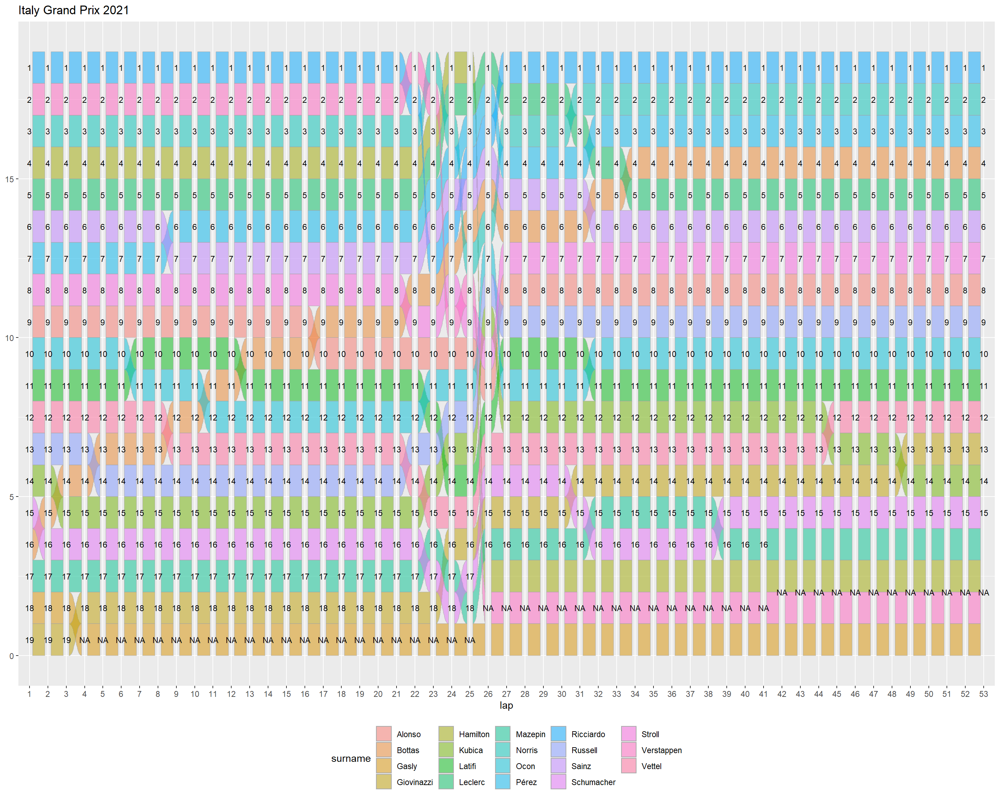
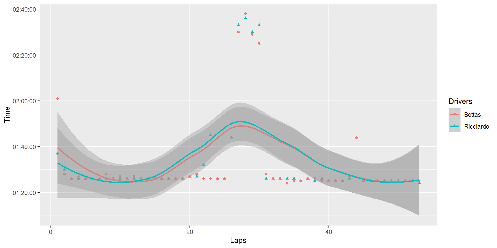
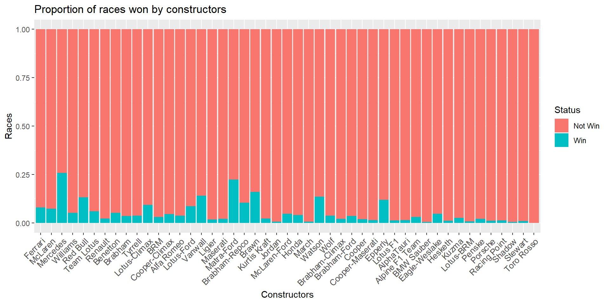
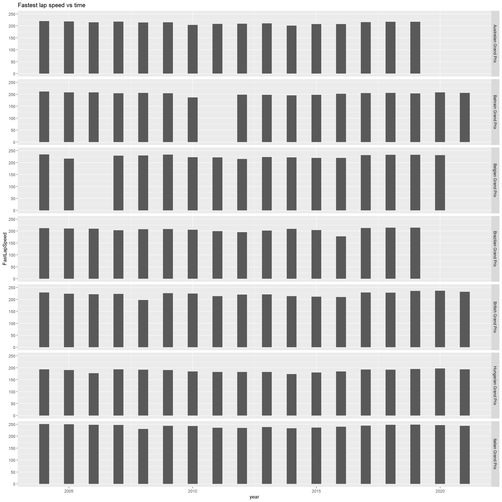

Chapter 5 Results
In this chapter, We try to use the data set to answer some of the important and interesting questions regarding Formula 1 racing sport. First, we represent and show the locations of circuits around the world since 1950
5.1 Formula 1 circuits spread since 1950
There are 77 circuits that have hosted a Formula 1 race since 1950. These circuits can be categorized into three different groups: permanent circuits, semi-permanent circuits, and circuits created in urbanization like in Monaco. Most of the circuits were in Europe since most of the Formula one team are from Europe and the logistic of transportation is easier in Europe due to the lack of technology in old days. From the 1980s, Formula 1 races were held on the American continents and then from the 2000s in Asia. A total of 32 countries have already hosted a Formula 1 Grand Prix. Here is a map listing all the circuits practiced since 1950. The number of races is proportional to the radius of the circle.
As you can see on the map, the 2 most mythical circuits are Monza in Italy and Monaco in Monte-Carlo. There have been 71 and 67 races respectively.
5.2 Italy Grand Prix 2021 (Monza) stats and driver performance
As it was mentioned before, the Italian Grand Prix is one of the most prestigious and famous Formula 1 races of the season. Due to the history and since Italy is the home of the oldest formula 1 team (Ferrari) we specifically investigate the data of drivers on this track for 2021. In 2021, 19 drivers were on the starting line. This graph allows us to follow the progress of the race over the laps.

We can notice on the 22nd lap a recurrent movement between the drivers. This corresponds to the pit stops which are inevitable at this level of the race for all the drivers. Pit stop is one of the most important strategic decisions that each of the team should consider for each of the tracks. The team considers so many factors such as previous results, type of Tyre, weather, and location of the track to figure out how many pit stops they need and in which lap. As this graph shows, one pit stop in lap 22en is the famous option for most of the teams in 2021. At the finish line, out of the 19 pilots, only 15 crossed it. Here are the reasons:
| Position | laps | Last Name | First Name | Nationality | Constructor | Status | |
|---|---|---|---|---|---|---|---|
| 1 | 1 | 53 | Ricciardo | Daniel | Australian | McLaren | Finished |
| 2 | 2 | 53 | Norris | Lando | British | McLaren | Finished |
| 14 | 3 | 53 | Bottas | Valtteri | Finnish | Mercedes | Finished |
| 6 | 4 | 53 | Leclerc | Charles | Monegasque | Ferrari | Finished |
| 7 | 5 | 53 | Pérez | Sergio | Mexican | Red Bull | Finished |
| 5 | 6 | 53 | Sainz | Carlos | Spanish | Ferrari | Finished |
| 12 | 7 | 53 | Stroll | Lance | Canadian | Aston Martin | Finished |
| 19 | 8 | 53 | Alonso | Fernando | Spanish | Alpine F1 Team | Finished |
| 4 | 9 | 53 | Russell | George | British | Williams | Finished |
| 20 | 10 | 53 | Ocon | Esteban | French | Alpine F1 Team | Finished |
| 3 | 11 | 53 | Latifi | Nicholas | Canadian | Williams | Finished |
| 11 | 12 | 53 | Vettel | Sebastian | German | Aston Martin | Finished |
| 10 | 13 | 53 | Giovinazzi | Antonio | Italian | Alfa Romeo | Finished |
| 9 | 14 | 53 | Kubica | Robert | Polish | Alfa Romeo | Finished |
| 15 | 15 | 53 | Schumacher | Mick | German | Haas F1 Team | Finished |
| 16 | 16 | 41 | Mazepin | Nikita | Russian | Haas F1 Team | Power Unit |
| 13 | 17 | 25 | Hamilton | Lewis | British | Mercedes | Collision |
| 8 | 18 | 25 | Verstappen | Max | Dutch | Red Bull | Collision |
| 17 | 19 | 3 | Gasly | Pierre | French | AlphaTauri | Suspension |
| 18 | 20 | 0 | Tsunoda | Yuki | Japanese | AlphaTauri | Brakes |
During this race, we can notice a lightning rise of the Finnish pilot Valtteri Bottas. The following graph shows the lap time for Valtteri Bottas and Daniel Richardo who won this race.

As can be seen, Bottas lost time in the first 12 laps of this race as compared to Daniel Richardo. After lap 12 Bottas was faster but not fast enough to win the race. However, he could improve his standing after lap 12.
5.3 Constructor (Team) performance
We can see on the following graph the proportion of victory of each constructor on the number of realized races. The graph is ordered from left to right according to the decreasing number of victories. If two drivers of the same constructor participate in the same race it is counted as two chances to win and therefore two races.

As can be seen, Ferrari has the most wins since it is the oldest Formula 1 team but a lower proportion of win than Mercedes or Red Bull. This shows that Mercedes or Red bull are more efficient than Ferrari.
Formula One is certainly a sport in which pilots push their performance but it is also a technological competition between constructors. Each constructor wants to recruit the best drivers in order to prove that their technology is the best during the races on the circuits. In the same way, each driver wants to join the most prestigious constructors in order to have more means and the most performing machines.
This figure shows the association of drivers to each of the constructors since 2000.
We have drivers like Verstappen who since the beginning of his career in 2016 is dear the same constructor (Red Bull) and drivers like Räikkönen who have changed constructors several times (Alfa Romeo, Ferrari, McLaren). Considering This graph with the driver with the most wins in the Data transformations sections, we can conclude that one of the important parameters in constructor performance is drivers. The most successful teams such as Mercedes or Red Bull have the best drivers for a long time.
A Formula 1 season is played out over a year that starts in March and ends in December with a break in August. The ranking is updated after each race and therefore it is important for drivers and teams to confirm their performance race after race in order to stay on top of the ranking. The following graph shows the top 6 places in each race in the 2021 season. Each line corresponds to a driver.
A solid line in this graph shows a driver who has remained consecutively in the top 6 places. In the top left corner, we can see a confrontation between Hamilton and Verstappen in 5 consecutive races.
5.4 The role of Technology in Formula 1
As we said, the objective in Formula 1 is speed and time. You have to cross the finish line first. In this plot, we tried to show the fastest lap speed in seven different tracks. Unfortunately, our data set does not have the data for the fastest lap before 2004. We have some missing value in this plot, it is because in some years there was no race in those locations.

As can be seen in this plot, the average speed is higher in some circuits due to the geometry of that circuit. For example, the Italian Grand Prix has one of the highest-speed circuits. For most of the circuit, the fastest speed lap increases over time. It should be mentioned that this increase is more before 2004 but unfortunately, we do not have the data. After, 2004, due to the safety of the drivers, the FIA tries to keep the fastest lap below 300 km/hr.
Another area that was influenced by technology is a pit stop. Here you can see the duration of a pit stop for some circuits.
Pit stop in formula 1 is very important and improving the duration is very hard. For some years we have increased in the duration, one of the reasons can be changing the length of pit stop lane in some circuits. However, generally, the pit stop duration decreased by milliseconds in the tracks. Most of this reduction is because of the new tools and technology in Formula 1.
Logistics is one of the most important sections of Formula 1 sports. Transferring all equipment, containers, cars around the world for each of the races needs management and tools. Technology helps the team to transfer their staff much easier these years from one continents to another in less than one week. In this plot, it can be seen the number of races per year.
As can be seen in this plot, generally, the number of races per year is increased. One of the reasons is the technology and the being able to transfer fast and easier recently. However, technology is not the only reason we are able to watch more races today. The popularity and financial aspects of formula 1 are also important that we can have more races nowadays.